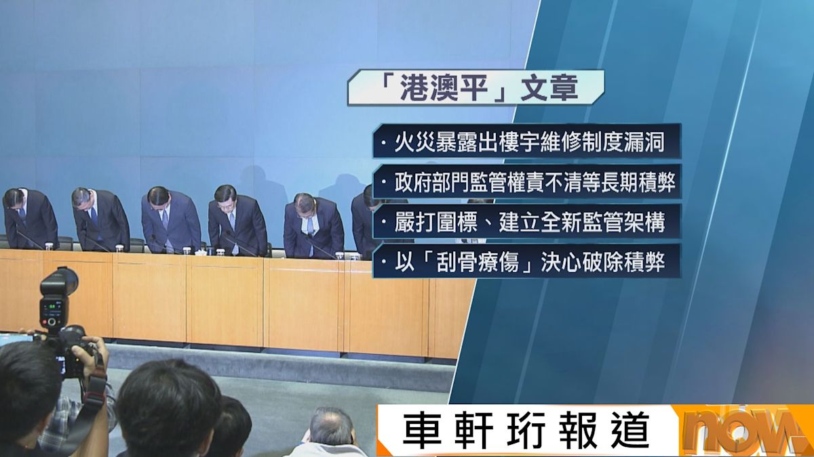
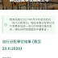

📰💡 投資博客
8 條 魔術師的伊謝爾倫日記
魔術師的伊謝爾倫日記
那些年的國貨補品
魔術師病倒兼遇上天氣突轉，靚姐姐在 WhatsApp 分享「高麗參精」補品，順道回顧那些年的國貨補品。
💡
阿B講股
阿B講股
財經日誌(11月24日)
阿 B 記錄 11 月 24 日市況：恒指跌 164 點收 22,219 點，成交 2,126 億元，跑輸美、日、韓股市。太古配售國泰股份套現 35.75 億元，他認為多一分現金多一分安全感；新世界發展供股令小股東進退兩難。
快活谷小子財自之路
';" />
快活谷小子財自之路
如果張子強係新加坡, 可唔可以早D收皮?
快活谷小子重溫張子強案，問 Gemini 若案件發生在新加坡會如何：新加坡承襲普通法但刑罰嚴峻，綁架勒索屬極嚴重罪行，可判鞭刑甚至死刑。
💡
阿B講股
阿B講股
王者回歸 2
阿 B 指連老黃自己都未必知道含金量如此高，復職令英偉達股價單日升逾三成，涉及資金逾萬億美元，並帶動全球重新點燃 AI 交易熱情，CoreWeave、SK 海力士、台積電等全線急升。
 阿B講股
阿B講股
王者回歸
英偉達董事會恢復黃仁勳 CEO 職務，納指即時狂升；阿 B 認為黃仁勳與喬布斯、蓋茨同屬教主級人物，三人創立的公司都曾登上「全球股王」寶座。

💡傻貓自由講
';" />
傻貓自由講
升小自行派位不成功;投資回顧 (2026年10月):重大虧損 $13萬
傻貓分享升小自行派位不成功的心情，以及 10 月投資回顧：整體重大虧損 13 萬元，美股、港股、比特幣、黃金、樓價全線下跌，Short Put 接了不少貨，流動現金亦已用盡。
💡
Stockresearch18
Stockresearch18
黃仁勳復職英偉達CEO
英偉達董事會於 11 月 23 日一致投票通過，恢復黃仁勳總裁、行政總裁及董事會成員職務，即時生效。
💡
財務自由人
財務自由人
黃仁勳閃電復職，輝達股價暴漲近三成，AI概念股全面大反彈
財務自由人回顧黃仁勳閃電復職：董事會一致通過即刻回任，輝達股價一度大漲近三成，費城半導體指數同步狂升約 14%，AI 概念股全面反彈。